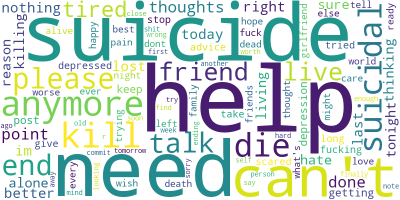
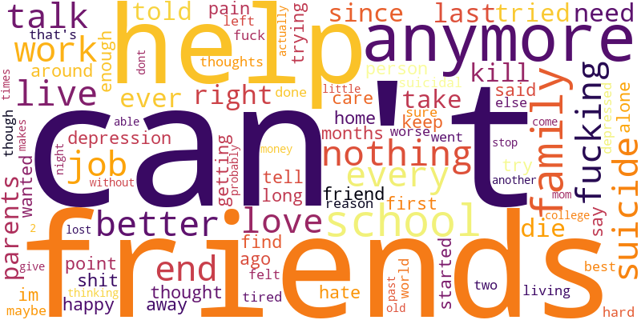

In reading through the fragments of these personal dialogues, several profound emotional undertones reveal themselves. Rather than random statements, they form a structured psychological architecture:
1. The Cycle of Fragile Rebuilding: Like a house built in the path of a recurring storm, there is a prominent theme of constructing temporary systems and mental structures, only to watch them get torn down by life's emotional "arcs." There is a fragile belief that each version of the self is "a little more robust, resilient," mixed with a constant, slow-burning fear that the next breakdown will be absolute, leaving nothing to rebuild.
2. The Incommunicable Self-Portrait: Many notes reveal a quiet, bittersweet acceptance of ultimate isolation. Like a painter whose self-portrait is viewed by everyone but understood by no one, there is the realization that other people will project their own "perspectives," "assumptions," and "realities" onto our lives. True peace is found not in demanding to be perfectly understood, but in holding gently to our own self-portrait, acknowledging that "yours, is only that self portrait. And that's fine."
3. The Friction of External Expectation: Running heavily beneath the text is the crushing weight of academic, professional, and social standards. The pressure to succeed and the constant feeling of failing these expectations manifest as exhaustion, overthinking, and a deeply felt identity as an "outcast."
Our mathematical model identifies 8 distinct thematic attractors. Far from dry statistical categories, these are the emotional coordinates where the isolated mind seeks refuge or release:
The heavy, daily weight of external life—struggling to anchor ourselves amidst family, school, job, and peer relations.
friends, family, school, job, work, loveThe stuttering internal monologue of doubt, where grammatical structures break down into raw, fearful negation.
im, dont, cant, ive, didnt, anymore, scaredThe moment the boundary of solitary overthinking is crossed, transforming into an urgent, direct call for connection.
please, help, need, stop, tell, suicidalThe explosive, screaming relief of raw frustration directed at an unyielding and cold universe.
fucking, hate, fuck, shit, world, done, fuckedA profound, systemic weariness where the simple act of trying and the desire for sleep collapse into burnout.
tired, anymore, keep, trying, sleep, end, livingThe quiet call of the void—where the sheer friction of existing outweighs the immediate instinct to survive.
die, wanna, live, pain, death, stop, careThe acute, terrifying threshold of immediate physical crisis where time and options run desperately thin.
The beautiful, lingering desire to find another human being who can read our self-portrait and break our isolation.


Visualizing term frequencies reveals a clear linguistic boundary between the Title and the Body of our notes. The Titles are compressed, sudden cries: heavily populated by action verbs and acute crisis terms like "help", "need", "suicide", and "die". Conversely, the inner selftexts contain highly descriptive, relational words: detailing social environments and friction points ("friends", "school", "family", "job", "work"). This suggests that while the internal crisis is deeply social and environmental, the outward call is condensed into a raw, immediate physical statement.
In brief title statements, the mind gets caught in highly repetitious, direct loops:
| Syntactical Loop | Encounter Frequency |
|---|---|
| need help | 2,598 |
| please help | 1,688 |
| need talk | 1,287 |
| suicidal thoughts | 1,170 |
| can't take anymore | 383 |
| can't stop thinking | 201 |
In longer reflections, the monologue loops back to structural triggers and social limits:
| Narrative Loop | Encounter Frequency |
|---|---|
| high school | 12,693 |
| best friend | 8,153 |
| suicidal thoughts | 8,265 |
| friends family | 5,270 |
| long story short | 1,473 |
| matter hard try | 992 |